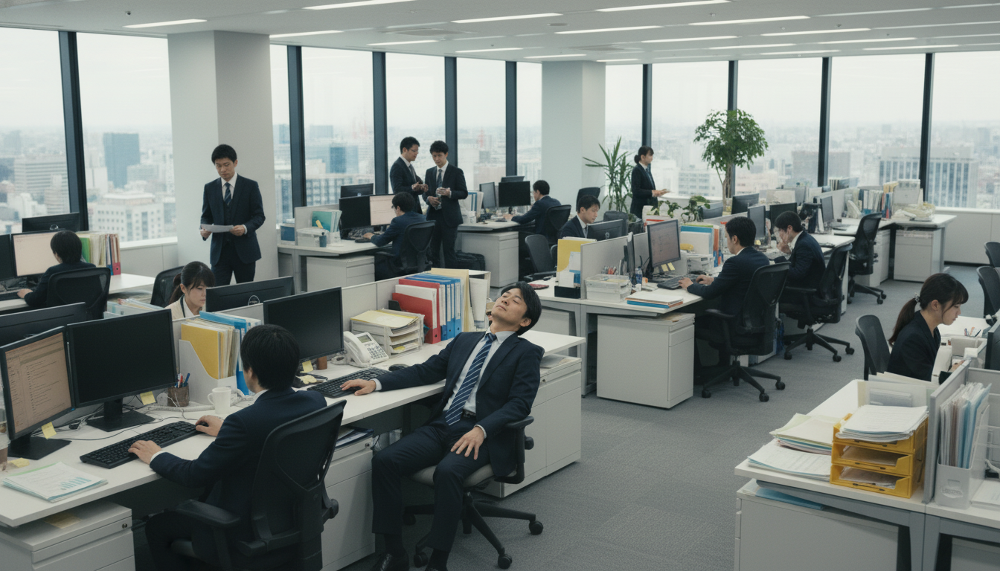
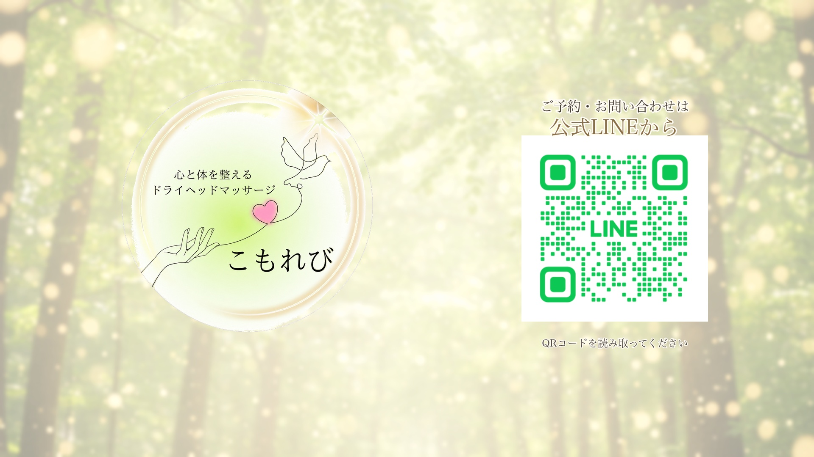

こもれび様 動画プレビュー
ドライヘッドスパ専門店 こもれび様｜画像つなぎ合わせ版
v32 画像修正版 — 2026/5/8🛠 v32 修正ポイント（中井様ご指摘反映）
- シーン2（PC疲れ男性）: キーボード2台で違和感があった点を修正。デスクトップPC1台＋キーボード1台のみの自然な構図に再生成しました。
- シーン7（女性施術）: 実際の店舗ルーム写真をベースに再現。茶色のベッド・診断書6枚・ダマスク柄カーテン・観葉植物・キャンドルなど実写の特徴を反映しました。
📺 動画プレビュー（20秒・v32）
まずは画像をつなぎ合わせて構成のイメージを見ていただける形にしました。
この後、動きや切り替え・BGM・テロップ・ナレーションを加えて完成形に仕上げていきます。
📝 訴求の流れ
① before（共感） 仕事で疲れたサラリーマン男性 / 家事育児で朝がしんどい女性
② 店舗到着 こもれびのドアを開ける
③ 施術（解決提示） 男女それぞれが安心の施術を受ける
④ after（変化） 男性は仕事にバリバリ取り組み、女性は家族と笑顔で過ごせる
⑤ CTA 公式LINEへ誘導
② 店舗到着 こもれびのドアを開ける
③ 施術（解決提示） 男女それぞれが安心の施術を受ける
④ after（変化） 男性は仕事にバリバリ取り組み、女性は家族と笑顔で過ごせる
⑤ CTA 公式LINEへ誘導
🎬 全12シーン

1仕事疲れの男性（引き）
before夜のオフィスで一人疲労

2PC疲れで目を押さえる男性 ★v32更新
beforePC1台に修正・キーボード重複解消
3朝起きるのがツラい女性
beforeベッドで起きれない
4家事で疲労困憊の女性
before洗濯機にもたれて一息
5こもれびの扉を開ける
入店ドアノブに手をかける
6男性が施術を受ける
体験代表の手元のみ・リラックス

7女性が施術を受ける（着衣） ★v32更新
体験実際の店舗ルームを忠実再現
8男性・やる気満々で仕事
after頭が軽くなりバリバリ
9男性・仲間にサポート
after余裕があるから人を助けられる
10女性・スッキリ朝起きれる
afterカーテン開けて爽快な朝
11女性・家族で朝食
after1日のスタートが明るくなる

12こもれびロゴ＋公式LINE
CTAご予約・お問い合わせはLINEから
📅 このあとの進め方
- 本ページの構成にOKをいただく
- 動画化（モーション付与・トランジション）してご確認
- BGM・テロップ・ナレーションを追加
- 初稿納品
💬 中井様にご確認いただきたい点
- 全体の構成・流れはこの方向性で進めてよろしいでしょうか？
- 気になるシーン・直したい点があれば、シーン番号と一緒にお知らせください
- 動画化のフェーズに進める場合は「OK」とお返事いただければ動き出します